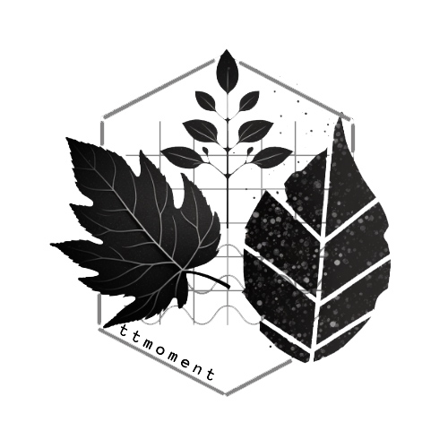

ttmoment 
Functional traits are key characteristics of organisms that relate to their performance, ecology, and evolution. The distribution of functional traits can provide important insights into the functioning of ecosystems and the responses of organisms to environmental change. Evaluating the moments of this distribution (i.e., mean, variance, skewness, and kurtosis) is a standard approach to quantifying the shape and dispersion of the distribution. It has been widely used in ecological and evolutionary research. However, calculating these moments for functional traits in R currently has two objects which could be confusing for beginners users of R. By developing the ttmoment R library that allows for easy and efficient calculation of these moments, researchers can save time and reduce the potential for errors in their analyses.
Installation
You can install the development version of ttmoment like so:
pak::pak("PaulESantos/ttmoment")Example
This is a basic example which shows you how to solve a common problem:
library(ttmoment)
#> This is ttmoment 0.0.0.9
#Data
df <- data.frame(trait = c("height", "height", "weight", "weight"),
trait_value = c(5, 10, 15, 12),
abundancia = c(1, 2, 1, 3),
comm = c("A", "A", "B", "B"))
#Function
tidy_calc_moment(df,
trait_names = trait,
comm_names = comm,
trait_value = trait_value,
weight = abundancia)
#> # A tibble: 2 × 6
#> trait comm cwm cwv cws cwk
#> <chr> <chr> <dbl> <dbl> <dbl> <dbl>
#> 1 height A 8.33 5.56 -0.707 -1.50
#> 2 weight B 12.8 1.69 1.15 -0.667